Sago Mini Trips+ ↗
Vehicles, packing and gentle exploration.
A gameplay field guide for KayleeGamepack. Find a proven iPad reference, study the interaction, and bring that feeling into her world.
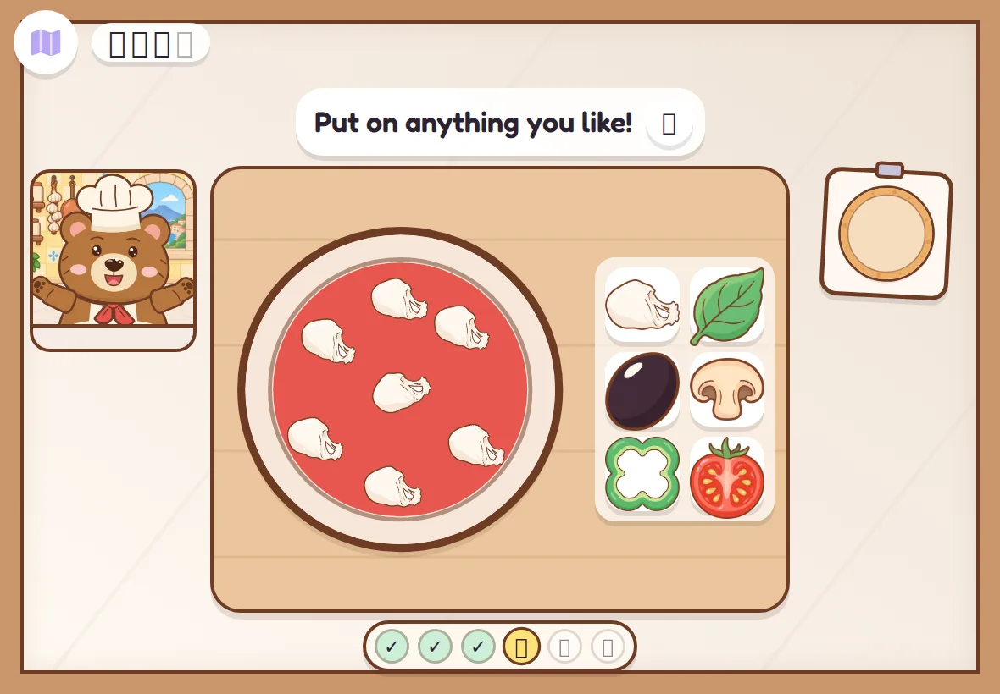
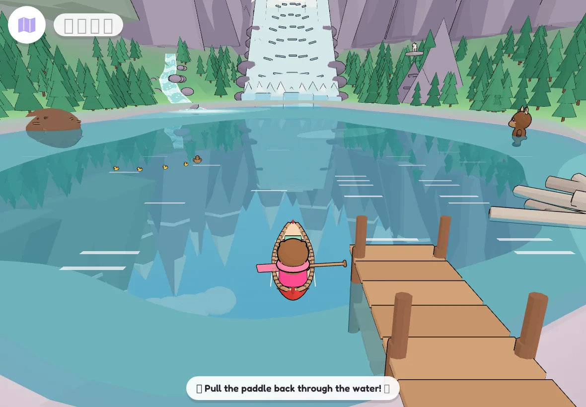
The strongest next step is to match a specific reference interaction, then tune it on the iPad. A native rewrite would still leave steering, dragging, collision recovery and assistance to design.
Use Sago Mini Trips+ for relaxed boating, then Angry Birds Reloaded for the pull-and-release model in Pepa’s Penguin Cliff. Get these two verbs right before spreading them to other activities.
Build a small set of shared mechanics: steering, launching, tool strokes and placement. Keep the art, characters and story around those controls, and reuse the successful interaction patterns across countries.
Strong = especially close control model. Close = a useful activity reference with adaptation. Partial = one interaction only; the whole game is not equivalent. These labels describe fit, not a quality score.
Runnable examples with source give an AI agent a concrete starting point. Pick the example closest to the mechanic, adapt its behavior to Kaylee’s game, and expose the settings for an iPad feel check.
For a boat: choose how a reference follows your finger, turns and stops. Recreate just that control in a plain scene with a simple boat. Tune responsiveness, turning, drifting and stopping on the iPad, then reuse the working controller in Venice, Whale Watch and other boat activities. “Shared” means reusable code across mini-games.
| Open-source resource | What it provides | Best fit in KayleeGamepack |
|---|---|---|
| Phaser examples ↗ | Runnable examples with source for input, dragging, snapping, cameras, movement and physics. Start with the dragging examples and input guide. | The first place to look for 2D mechanics. Phaser is already installed in this repo; keep it scoped to a suitable play field rather than replacing the React shell. |
| Matter.js ↗ | A 2D physics engine with demos for launching, stacking, friction, bouncing, constraints and vehicles. Try the slingshot demo and its source. | Penguin launches, salmon jumps, blocks and snowballs. Use a demo to establish predictable behavior; a slingshot and a velocity-based flick still need different input mappings. |
| interact.js ↗ | Drag interactions, snapping and movement restrictions, multitouch, and inertia after release. | HTML/SVG puzzle pieces, toppings, dressing and movable props. Evaluate it against the existing interaction kit before replacing working controls; it does not supply 3D world physics. |
| Rapier ↗ | Open-source 2D and 3D physics, with JavaScript bindings for rigid bodies, collisions and joints. See the JavaScript getting-started guide. | Three.js activities that need physical stacking or collisions. Rapier handles physics; the touch controls and assistance still need to be designed. |
| Yuka ↗ | Game-AI movement behaviors including seeking, arriving, following and obstacle avoidance. The arrival behavior approaches a target. | Animals following a leader, companions and race opponents. Primarily an AI movement library: study its behaviors before considering them for player steering. |
Recommended starting point: Phaser’s examples and Matter.js’s slingshot for 2D interactions; Reynolds’ arrival and steering guidance for the existing Three.js boat controller. Choose a resource for the problem at hand rather than adding all five libraries.
Agent brief: “Adapt this working example’s interaction to our game, expose its tuning values, and preserve our visuals.” Use the reference-to-prototype workflow below for the full brief. A library supplies building blocks; the final control settings still need a real iPad check.
Try these first. Reference labels below name activities inside a collection when applicable. Availability was checked through US App Store listings; access and subscriptions can change.
Vehicles, packing and gentle exploration.
Kitchen 2, Kitchen Sushi, Pet Doctor, Builders, Nature, Dance and Band.
Continuous brushing, cutting, coloring and tool feedback.
Tactile toys and playful object reactions.
Orders, preparation stations, toppings and cutting.
Toca Boca Jr contains the Kitchen, Pet Doctor, Builders, Nature, Plants, Parties and music activities referenced in this report. Sago Mini Trips+ includes Road Trip, Boats, Planes and Trains. Sago Mini World’s Pizza Shop provides another preschool cooking reference. Use the App Store links to inspect current access options.
Sonic Racing, Riptide, Touchgrind and Good Pizza are primarily adult study references here. Adapt their feedback and control ideas to Kaylee; their difficulty, reading and business systems need not carry over.
Actual app screens captured from this checkout at 1180 × 820 in desktop Chromium with touch emulation. They are not physical-iPad screenshots or proof of gameplay quality. Tap a screen to enlarge it.
Card thumbnails below use existing app cover art, labeled as cover art; Poles cards use a labeled Penguin Slide gameplay capture. The gallery above shows rendered gameplay. Capture provenance is recorded in screenshots.json.
Search a game, country, reference or verb. Save promising matches and jot down what felt good after playing the reference. Each card links to the app and to a relevant game section.
86 activity mappings
No matching activities. Try another search or clear the filters.
Start with the tool in her hand. A good pickup, stroke or placement should remain satisfying before a story or reward is added.
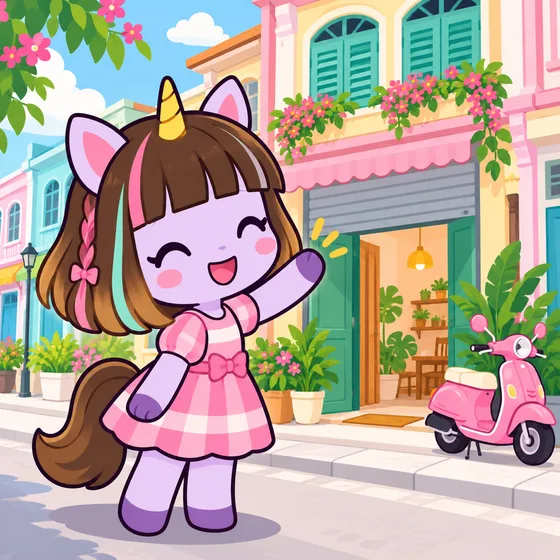
APP COVER ARTPicking up props, furniture interactions and actions that stay available without instructions.
Compare pickup, finger mapping, movement, release, feedback, mistakes and recovery. Keep the reference’s interaction model while adapting difficulty for a five-year-old.
Link to this activity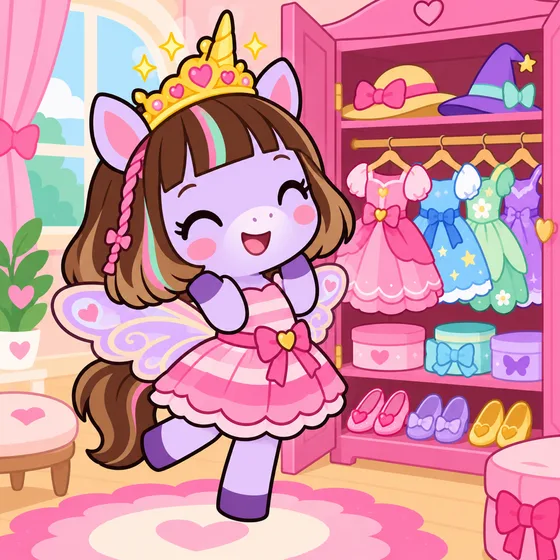
APP COVER ARTClear clothing previews and immediate outfit changes.
Compare pickup, finger mapping, movement, release, feedback, mistakes and recovery. Keep the reference’s interaction model while adapting difficulty for a five-year-old.
Link to this activity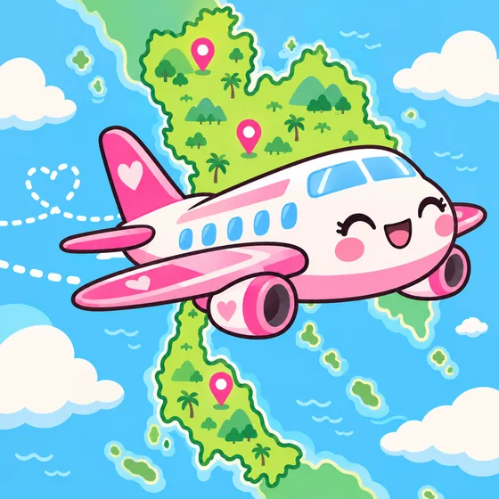
APP COVER ARTPlayful travel and recognizable destinations; no exact map equivalent selected.
Compare pickup, finger mapping, movement, release, feedback, mistakes and recovery. This is a partial interaction reference, not a whole-game equivalent.
Link to this activity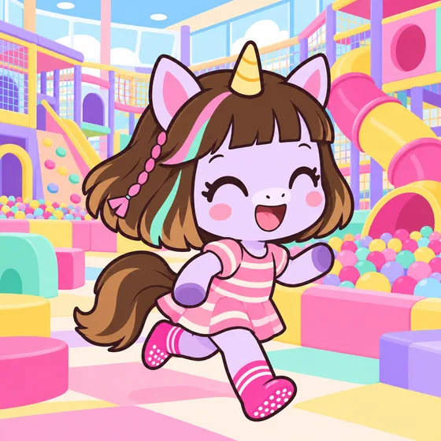
APP COVER ARTDiscoverable activities and easy movement between play spaces.
Compare pickup, finger mapping, movement, release, feedback, mistakes and recovery. Keep the reference’s interaction model while adapting difficulty for a five-year-old.
Link to this activity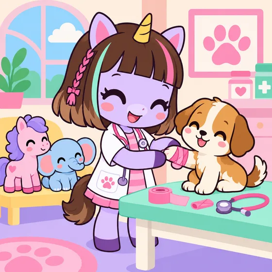
APP COVER ARTPet Doctor: tool pickup, generous treatment areas, visible progress and patient reactions.
Compare pickup, finger mapping, movement, release, feedback, mistakes and recovery. Keep the reference’s interaction model while adapting difficulty for a five-year-old.
Link to this activity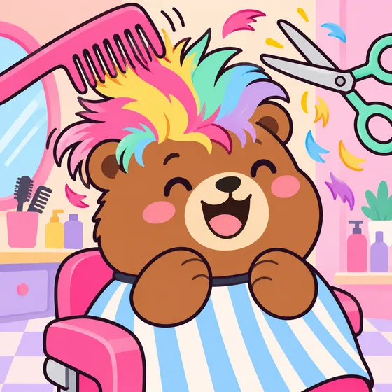
APP COVER ARTHair follows the tool; cutting is continuous, regrowth is easy and experimentation is forgiving.
Compare pickup, finger mapping, movement, release, feedback, mistakes and recovery. Keep the reference’s interaction model while adapting difficulty for a five-year-old.
Link to this activity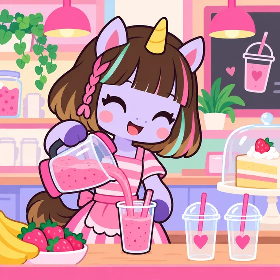
APP COVER ARTKitchen 2: food handling, blending, pouring, serving and reactions.
Compare pickup, finger mapping, movement, release, feedback, mistakes and recovery. Keep the reference’s interaction model while adapting difficulty for a five-year-old.
Link to this activity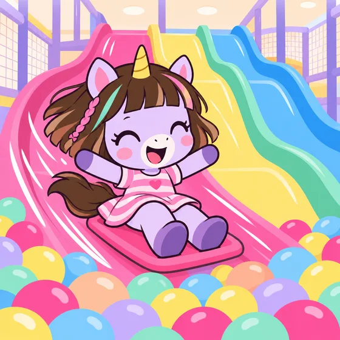
APP COVER ARTAcceleration, anticipation before drops, landing feedback and a stable camera.
Compare pickup, finger mapping, movement, release, feedback, mistakes and recovery. This is a partial interaction reference, not a whole-game equivalent.
Link to this activity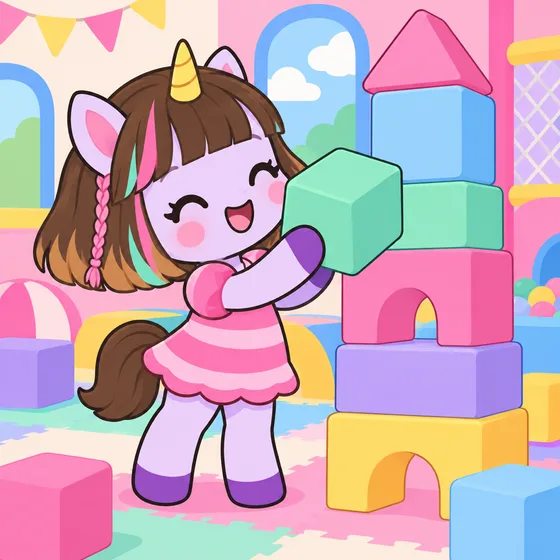
APP COVER ARTBuilders / Blocks: placement previews, predictable attachment, undo and building without camera friction.
Compare pickup, finger mapping, movement, release, feedback, mistakes and recovery. Keep the reference’s interaction model while adapting difficulty for a five-year-old.
Link to this activity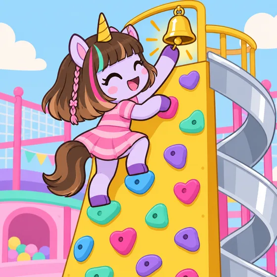
APP COVER ARTClear reachable moves and short obstacles; no close climbing equivalent selected.
Compare pickup, finger mapping, movement, release, feedback, mistakes and recovery. This is a partial interaction reference, not a whole-game equivalent.
Link to this activity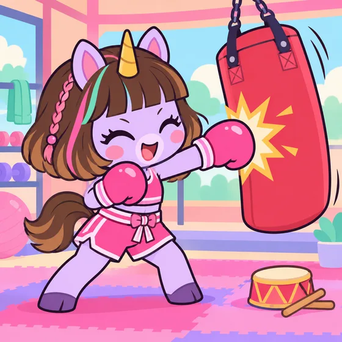
APP COVER ARTImmediate gesture feedback, forgiving hit detection and satisfying impact; rhythm needs separate tuning.
Compare pickup, finger mapping, movement, release, feedback, mistakes and recovery. This is a partial interaction reference, not a whole-game equivalent.
Link to this activity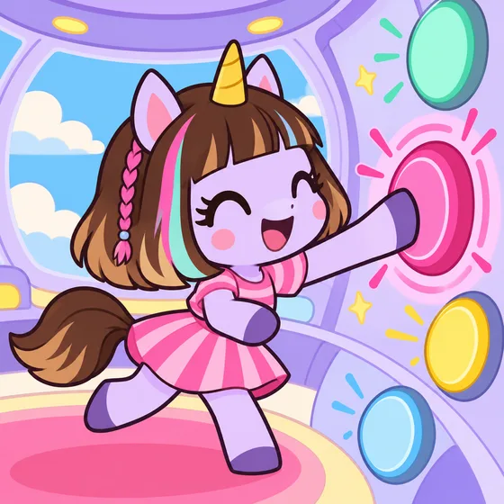
APP COVER ARTTarget clarity, response timing and gradual difficulty.
Compare pickup, finger mapping, movement, release, feedback, mistakes and recovery. This is a partial interaction reference, not a whole-game equivalent.
Link to this activity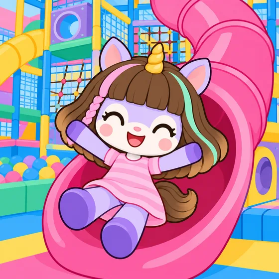
APP COVER ARTWorld for playground interactions; Alto for slide movement. This needs more than one reference.
Compare pickup, finger mapping, movement, release, feedback, mistakes and recovery. This is a partial interaction reference, not a whole-game equivalent.
Link to this activity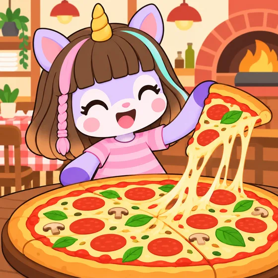
APP COVER ARTParties / Kitchen 2: pulling out portions and making each handoff obvious. Tune cheese stretching separately.
Compare pickup, finger mapping, movement, release, feedback, mistakes and recovery. Keep the reference’s interaction model while adapting difficulty for a five-year-old.
Link to this activitySeparate relaxed exploration from competitive racing. They need different steering and recovery behavior.
Packing objects, departure, interactive travel and arrival.
Compare pickup, finger mapping, movement, release, feedback, mistakes and recovery. Keep the reference’s interaction model while adapting difficulty for a five-year-old.
Link to this activity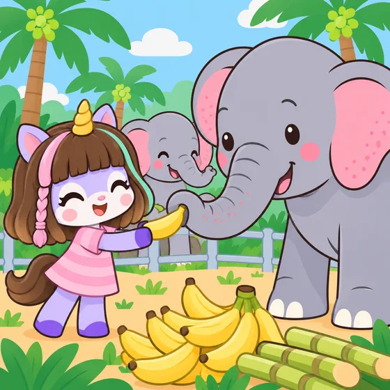
APP COVER ARTPet Doctor / Kitchen 2: keep food attached to the finger until accepted; make the acceptance range readable.
Compare pickup, finger mapping, movement, release, feedback, mistakes and recovery. This is a partial interaction reference, not a whole-game equivalent.
Link to this activity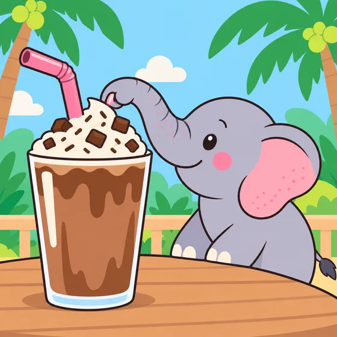
APP COVER ARTKitchen 2: holding, sipping, serving and playful spills.
Compare pickup, finger mapping, movement, release, feedback, mistakes and recovery. Keep the reference’s interaction model while adapting difficulty for a five-year-old.
Link to this activity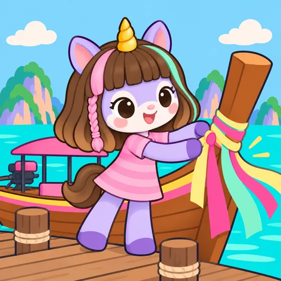
APP COVER ARTAttachment previews and forgiving decoration placement.
Compare pickup, finger mapping, movement, release, feedback, mistakes and recovery. This is a partial interaction reference, not a whole-game equivalent.
Link to this activity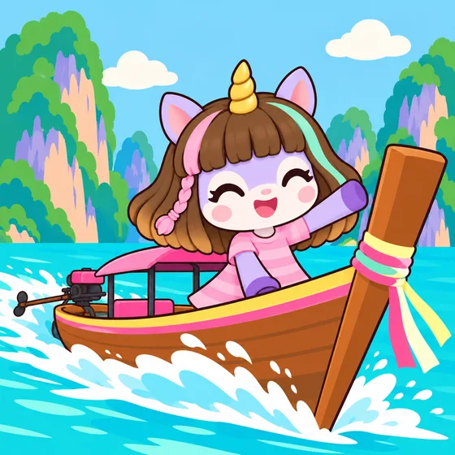
APP COVER ARTBoats: relaxed handling, gentle inertia, exploration and encounters.
Compare pickup, finger mapping, movement, release, feedback, mistakes and recovery. Keep the reference’s interaction model while adapting difficulty for a five-year-old.
Link to this activityBoats: maneuvering around scenery without frustrating collisions.
Compare pickup, finger mapping, movement, release, feedback, mistakes and recovery. This is a partial interaction reference, not a whole-game equivalent.
Link to this activity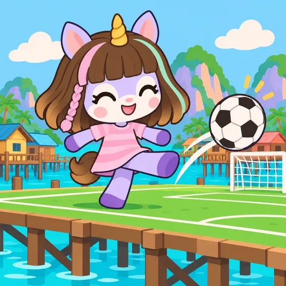
APP COVER ARTFinger-to-object control, impacts, aiming and rebounds.
Compare pickup, finger mapping, movement, release, feedback, mistakes and recovery. This is a partial interaction reference, not a whole-game equivalent.
Link to this activitySteering response, readable turns, collision recovery and speed feedback. Simplify difficulty for Kaylee.
Compare pickup, finger mapping, movement, release, feedback, mistakes and recovery. Keep the reference’s interaction model while adapting difficulty for a five-year-old.
Link to this activityRoad Trip / Trains: moving a toy vehicle between stops.
Compare pickup, finger mapping, movement, release, feedback, mistakes and recovery. This is a partial interaction reference, not a whole-game equivalent.
Link to this activity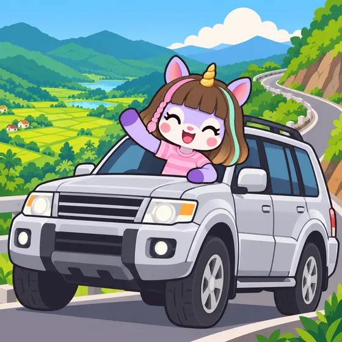
APP COVER ARTCars / Sonic: predictable steering and retaining control through curves.
Compare pickup, finger mapping, movement, release, feedback, mistakes and recovery. Keep the reference’s interaction model while adapting difficulty for a five-year-old.
Link to this activity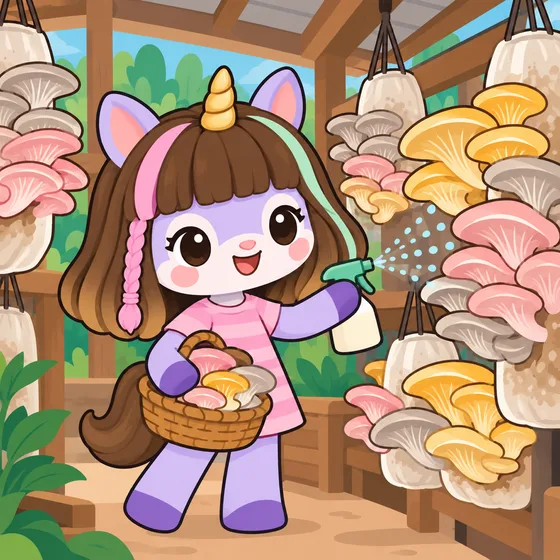
APP COVER ARTLab: Plants: applying a tool produces continuous, visible growth feedback.
Compare pickup, finger mapping, movement, release, feedback, mistakes and recovery. This is a partial interaction reference, not a whole-game equivalent.
Link to this activity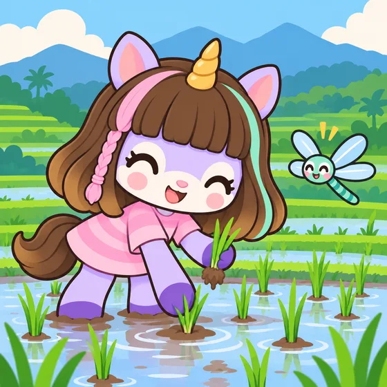
APP COVER ARTNature / Lab: Plants: planting, growth, harvesting and understandable cause and effect.
Compare pickup, finger mapping, movement, release, feedback, mistakes and recovery. This is a partial interaction reference, not a whole-game equivalent.
Link to this activity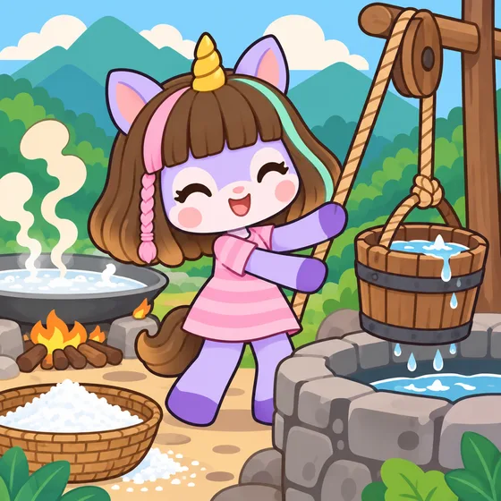
APP COVER ARTBucket handling, pouring, fill levels and visible material transfer.
Compare pickup, finger mapping, movement, release, feedback, mistakes and recovery. This is a partial interaction reference, not a whole-game equivalent.
Link to this activitySteering, track readability, overtaking, boosts, recovery and close finishes. Tune one vehicle before differentiating tracks; Cup is a greybox.
Compare pickup, finger mapping, movement, release, feedback, mistakes and recovery. Keep the reference’s interaction model while adapting difficulty for a five-year-old.
Link to this activityOne train, eight activities and a finale. Start with the boat and the salmon: the control models recur throughout the app.
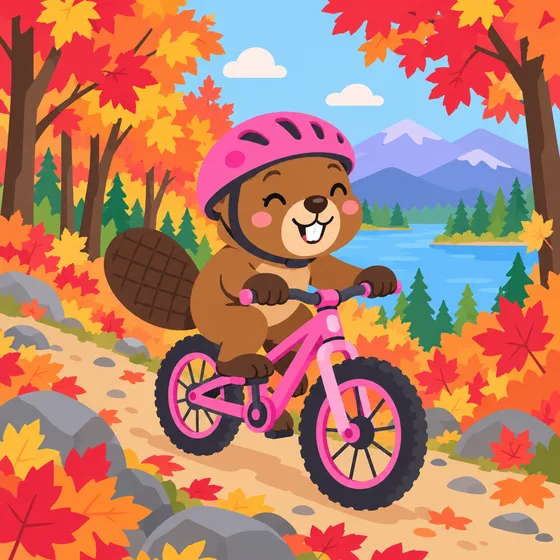
APP COVER ARTTrains: pushing, coasting, stops and scenery responding to travel.
Compare pickup, finger mapping, movement, release, feedback, mistakes and recovery. Keep the reference’s interaction model while adapting difficulty for a five-year-old.
Link to this activity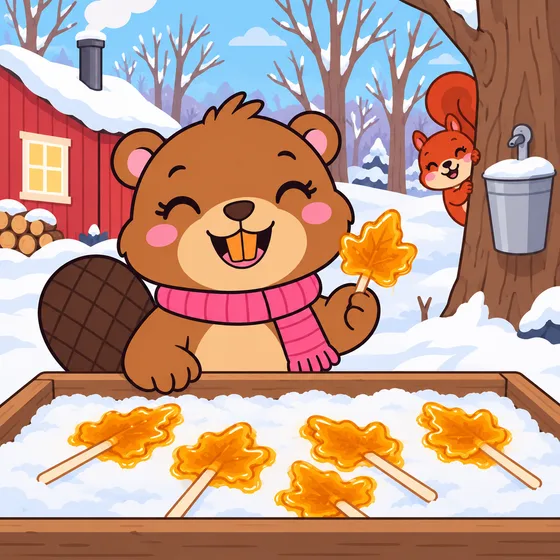
APP COVER ARTContinuous pouring, stopping on release, accumulating material and fill feedback. Prototype taffy rolling separately.
Compare pickup, finger mapping, movement, release, feedback, mistakes and recovery. This is a partial interaction reference, not a whole-game equivalent.
Link to this activity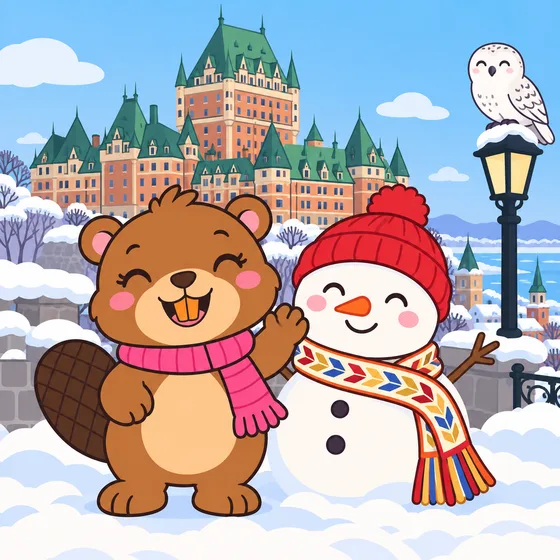
APP COVER ARTVisible growth while rolling, predictable stacking and decorating.
Compare pickup, finger mapping, movement, release, feedback, mistakes and recovery. This is a partial interaction reference, not a whole-game equivalent.
Link to this activityWeight, leaning, takeoff and landing. Use Alto for simplicity; do not copy BMX’s two-finger controls for Kaylee.
Compare pickup, finger mapping, movement, release, feedback, mistakes and recovery. This is a partial interaction reference, not a whole-game equivalent.
Link to this activity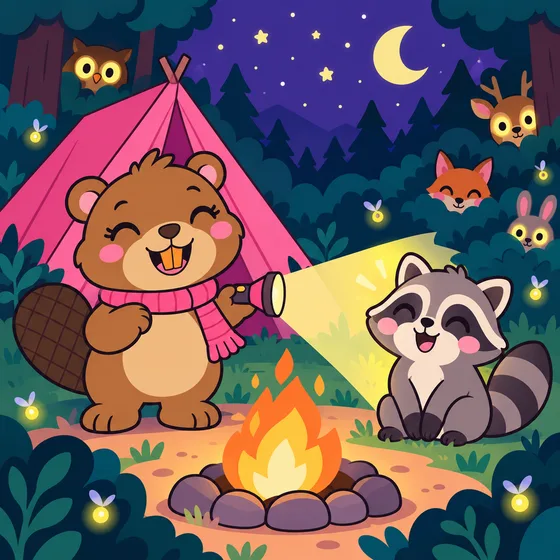
APP COVER ARTExploration and incidental reactions. Prototype flashlight tracking and dwell-to-reveal separately.
Compare pickup, finger mapping, movement, release, feedback, mistakes and recovery. This is a partial interaction reference, not a whole-game equivalent.
Link to this activity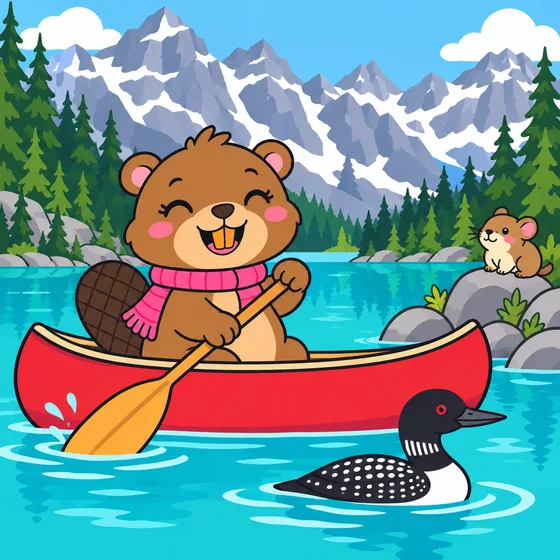
APP COVER ARTBoats: responsive movement, gentle inertia, stopping and recovery. Exact paddling gestures are only a partial match.
Compare pickup, finger mapping, movement, release, feedback, mistakes and recovery. Keep the reference’s interaction model while adapting difficulty for a five-year-old.
Link to this activity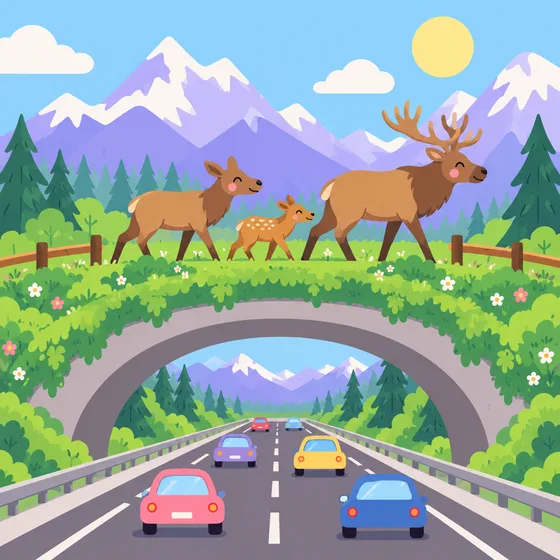
APP COVER ARTLeading, keeping followers together and recovering a separated follower. No exact herd equivalent selected.
Compare pickup, finger mapping, movement, release, feedback, mistakes and recovery. This is a partial interaction reference, not a whole-game equivalent.
Link to this activity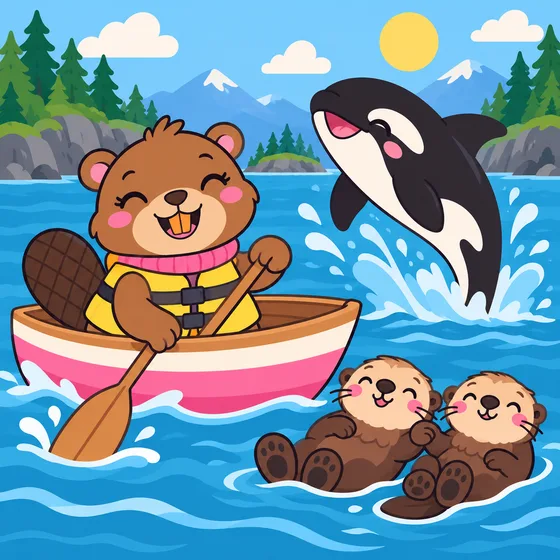
APP COVER ARTBoats: steer toward encounters, stop nearby and reward discovery.
Compare pickup, finger mapping, movement, release, feedback, mistakes and recovery. Keep the reference’s interaction model while adapting difficulty for a five-year-old.
Link to this activity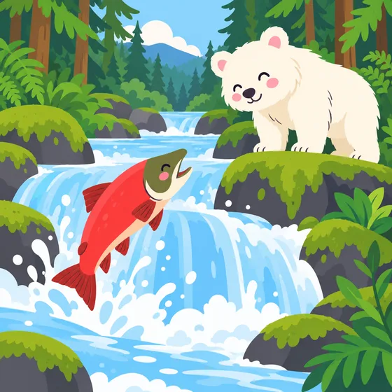
APP COVER ARTPredictable strength and arcs, generous landing areas and immediate retry. A flick differs from a slingshot.
Compare pickup, finger mapping, movement, release, feedback, mistakes and recovery. This is a partial interaction reference, not a whole-game equivalent.
Link to this activity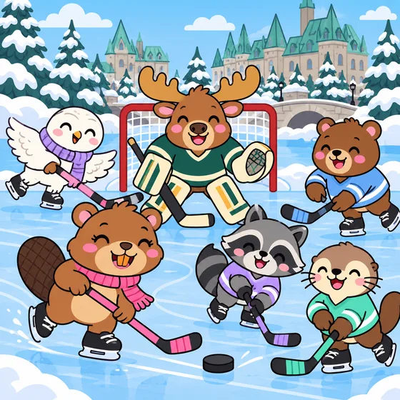
APP COVER ARTPicking up, matching and snapping into the intended destination.
Compare pickup, finger mapping, movement, release, feedback, mistakes and recovery. This is a partial interaction reference, not a whole-game equivalent.
Link to this activityDirect control, puck collisions, rebounds, goals and fast restarts.
Compare pickup, finger mapping, movement, release, feedback, mistakes and recovery. Keep the reference’s interaction model while adapting difficulty for a five-year-old.
Link to this activityLaunches, sliding and physical toys. Match the finger-to-motion relationship before adding more simulation.
Nature: direct world manipulation and immediate environmental consequences. No exact globe reference selected.
Compare pickup, finger mapping, movement, release, feedback, mistakes and recovery. This is a partial interaction reference, not a whole-game equivalent.
Link to this activityAim preview, launch strength, landing tolerance and recovery after a miss.
Compare pickup, finger mapping, movement, release, feedback, mistakes and recovery. Keep the reference’s interaction model while adapting difficulty for a five-year-old.
Link to this activityStrokes affect the touched area; visible coverage and reversible changes.
Compare pickup, finger mapping, movement, release, feedback, mistakes and recovery. This is a partial interaction reference, not a whole-game equivalent.
Link to this activityAlto for momentum, slopes and bumps; Sonic for steering and camera readability.
Compare pickup, finger mapping, movement, release, feedback, mistakes and recovery. Keep the reference’s interaction model while adapting difficulty for a five-year-old.
Link to this activityObjects make room for each other and respond to placement. Temperature and packing need their own prototype.
Compare pickup, finger mapping, movement, release, feedback, mistakes and recovery. This is a partial interaction reference, not a whole-game equivalent.
Link to this activityPlayful deformation, mass, bounce and physical reactions; not an exact ice-fracture or buoyancy model.
Compare pickup, finger mapping, movement, release, feedback, mistakes and recovery. This is a partial interaction reference, not a whole-game equivalent.
Link to this activityPlanes: flight control and encounters.
Compare pickup, finger mapping, movement, release, feedback, mistakes and recovery. This is a partial interaction reference, not a whole-game equivalent.
Link to this activityDrawing tools; clear answers and feedback.
Compare pickup, finger mapping, movement, release, feedback, mistakes and recovery. This is a partial interaction reference, not a whole-game equivalent.
Link to this activityTwo particularly strong references: Hair Salon for Luna, and Angry Birds for Pepa’s pull-and-release launch.
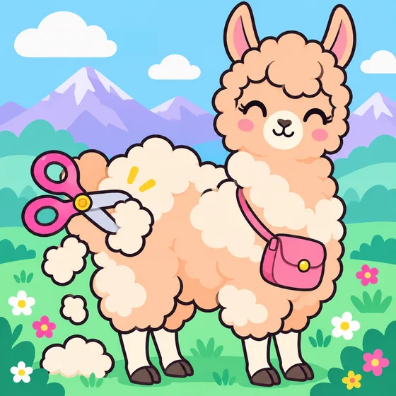
APP COVER ARTBrushing, clipping, coverage, character reactions and creative results.
Compare pickup, finger mapping, movement, release, feedback, mistakes and recovery. Keep the reference’s interaction model while adapting difficulty for a five-year-old.
Link to this activity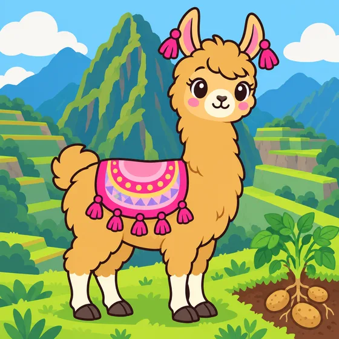
APP COVER ARTPieces remain under the finger, snap zones are generous, and placement has a clear payoff.
Compare pickup, finger mapping, movement, release, feedback, mistakes and recovery. Keep the reference’s interaction model while adapting difficulty for a five-year-old.
Link to this activity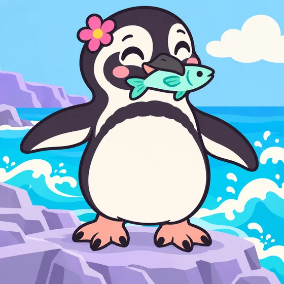
APP COVER ARTPull back, preview the arc and release. Particularly close to the current launch model.
Compare pickup, finger mapping, movement, release, feedback, mistakes and recovery. Keep the reference’s interaction model while adapting difficulty for a five-year-old.
Link to this activity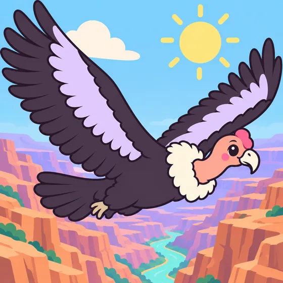
APP COVER ARTPlanes: finger-following flight and camera movement. Thermals and altitude need a separate prototype.
Compare pickup, finger mapping, movement, release, feedback, mistakes and recovery. This is a partial interaction reference, not a whole-game equivalent.
Link to this activity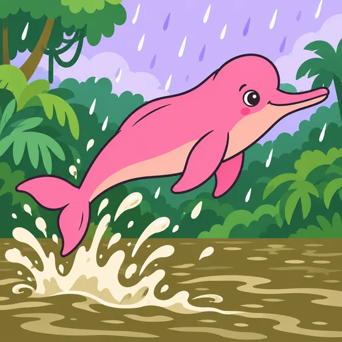
APP COVER ARTNature / Lab: Plants: local, continuous consequences of environmental manipulation.
Compare pickup, finger mapping, movement, release, feedback, mistakes and recovery. This is a partial interaction reference, not a whole-game equivalent.
Link to this activityPlanes: travel feel only. The current preview is not a completed game.
Compare pickup, finger mapping, movement, release, feedback, mistakes and recovery. This is a partial interaction reference, not a whole-game equivalent.
Link to this activityThe cooking and boat references are close. Olive harvesting, aqueduct building and conducting each need a small focused prototype.
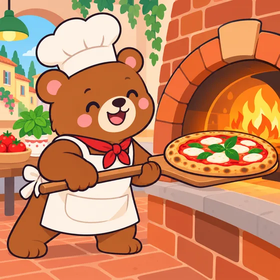
APP COVER ARTGood Pizza for preparation workflow; Sago Mini World’s Pizza Shop for a preschool interpretation.
Compare pickup, finger mapping, movement, release, feedback, mistakes and recovery. Keep the reference’s interaction model while adapting difficulty for a five-year-old.
Link to this activity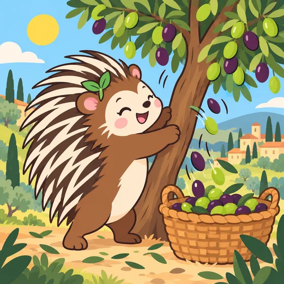
APP COVER ARTKitchen 2 / Lab: Plants: raking, collecting, processing and pouring. No single equivalent covers the sequence.
Compare pickup, finger mapping, movement, release, feedback, mistakes and recovery. This is a partial interaction reference, not a whole-game equivalent.
Link to this activity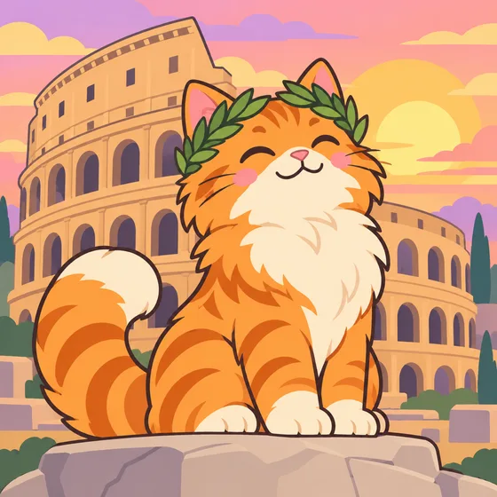
APP COVER ARTRopes and mechanisms respond continuously while manipulated.
Compare pickup, finger mapping, movement, release, feedback, mistakes and recovery. This is a partial interaction reference, not a whole-game equivalent.
Link to this activity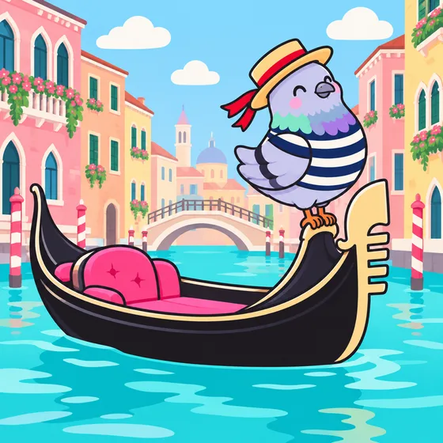
APP COVER ARTBoats: direct control, inertia, turns, stops and encounters.
Compare pickup, finger mapping, movement, release, feedback, mistakes and recovery. Keep the reference’s interaction model while adapting difficulty for a five-year-old.
Link to this activity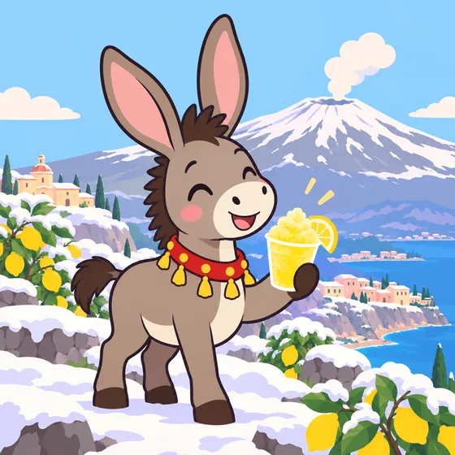
APP COVER ARTRoad Trip for leading through changing environments; Kitchen 2 for granita serving.
Compare pickup, finger mapping, movement, release, feedback, mistakes and recovery. This is a partial interaction reference, not a whole-game equivalent.
Link to this activityFit aqueduct pieces, then clearly show why water flows or stops.
Compare pickup, finger mapping, movement, release, feedback, mistakes and recovery. This is a partial interaction reference, not a whole-game equivalent.
Link to this activityImmediate musical response and control over a performance; the conducting gesture is a separate mechanic.
Compare pickup, finger mapping, movement, release, feedback, mistakes and recovery. This is a partial interaction reference, not a whole-game equivalent.
Link to this activityUse a cooking reference consistently across ingredients, tools and serving. Treat the lazy Susan as a separate rotational toy.
Lab: Plants: growth feedback and interesting repeated manipulation.
Compare pickup, finger mapping, movement, release, feedback, mistakes and recovery. Keep the reference’s interaction model while adapting difficulty for a five-year-old.
Link to this activityShape placement for bricks; Trains for dragging through a long scene.
Compare pickup, finger mapping, movement, release, feedback, mistakes and recovery. This is a partial interaction reference, not a whole-game equivalent.
Link to this activityKitchen 2 / Kitchen Sushi: pickup, cooking, retrieval and serving. Prototype table rotation separately.
Compare pickup, finger mapping, movement, release, feedback, mistakes and recovery. Keep the reference’s interaction model while adapting difficulty for a five-year-old.
Link to this activityStroke guidance, tolerance, progress and assistance after mistakes.
Compare pickup, finger mapping, movement, release, feedback, mistakes and recovery. Keep the reference’s interaction model while adapting difficulty for a five-year-old.
Link to this activityBoats for river crossing; Thinkrolls for manipulating obstacles and stepping stones.
Compare pickup, finger mapping, movement, release, feedback, mistakes and recovery. This is a partial interaction reference, not a whole-game equivalent.
Link to this activityTrains for control, stops and encounters; World for dressing passengers.
Compare pickup, finger mapping, movement, release, feedback, mistakes and recovery. Keep the reference’s interaction model while adapting difficulty for a five-year-old.
Link to this activityKitchen Sushi / Kitchen 2: food preparation, tools, station transitions and serving.
Compare pickup, finger mapping, movement, release, feedback, mistakes and recovery. Keep the reference’s interaction model while adapting difficulty for a five-year-old.
Link to this activityDance / Band for musical response. Tune the following dragon body separately.
Compare pickup, finger mapping, movement, release, feedback, mistakes and recovery. This is a partial interaction reference, not a whole-game equivalent.
Link to this activityMake placement, rubbing and pouring consistent with the same verbs elsewhere in the app.
Builders: heavy-looking pieces, previews and stacking. Busy Shapes: forgiving snapping.
Compare pickup, finger mapping, movement, release, feedback, mistakes and recovery. Keep the reference’s interaction model while adapting difficulty for a five-year-old.
Link to this activityClear movement constraints, understandable obstacles and easy recovery.
Compare pickup, finger mapping, movement, release, feedback, mistakes and recovery. Keep the reference’s interaction model while adapting difficulty for a five-year-old.
Link to this activityContinuous rubbing and coverage; shape placement for assembling the pot.
Compare pickup, finger mapping, movement, release, feedback, mistakes and recovery. This is a partial interaction reference, not a whole-game equivalent.
Link to this activityBoats: movement and collecting en route. Prototype the shaduf as a separate lever.
Compare pickup, finger mapping, movement, release, feedback, mistakes and recovery. Keep the reference’s interaction model while adapting difficulty for a five-year-old.
Link to this activitySymbol matching and selection feedback. Current mechanic is press-and-hold stamping, not handwriting.
Compare pickup, finger mapping, movement, release, feedback, mistakes and recovery. This is a partial interaction reference, not a whole-game equivalent.
Link to this activityKitchen 2: layering food, serving, pouring and playful overfilling.
Compare pickup, finger mapping, movement, release, feedback, mistakes and recovery. Keep the reference’s interaction model while adapting difficulty for a five-year-old.
Link to this activityDragging controls immediately changes the scene.
Compare pickup, finger mapping, movement, release, feedback, mistakes and recovery. This is a partial interaction reference, not a whole-game equivalent.
Link to this activityThe original 2D games benefit most from consistent pickup, acceptance and discovery behavior.
Counting through action; World for dressing Pip.
Compare pickup, finger mapping, movement, release, feedback, mistakes and recovery. This is a partial interaction reference, not a whole-game equivalent.
Link to this activityKitchen 2 / Pet Doctor: acceptance zones, food following the finger and expressive chewing.
Compare pickup, finger mapping, movement, release, feedback, mistakes and recovery. Keep the reference’s interaction model while adapting difficulty for a five-year-old.
Link to this activityDiscoverability, clues, incidental interactions and hidden animals.
Compare pickup, finger mapping, movement, release, feedback, mistakes and recovery. Keep the reference’s interaction model while adapting difficulty for a five-year-old.
Link to this activityStar placement, snapping and matching.
Compare pickup, finger mapping, movement, release, feedback, mistakes and recovery. Keep the reference’s interaction model while adapting difficulty for a five-year-old.
Link to this activityPet Doctor: carrying creatures into generous destinations with immediate reactions.
Compare pickup, finger mapping, movement, release, feedback, mistakes and recovery. This is a partial interaction reference, not a whole-game equivalent.
Link to this activityColor choice, brush versus fill, undo and completion.
Compare pickup, finger mapping, movement, release, feedback, mistakes and recovery. Keep the reference’s interaction model while adapting difficulty for a five-year-old.
Link to this activityDance / Band: participate in a celebration instead of waiting through animations.
Compare pickup, finger mapping, movement, release, feedback, mistakes and recovery. This is a partial interaction reference, not a whole-game equivalent.
Link to this activityChoices stay in this browser when storage is available.
No references saved yet. Use “Save” on any activity card.
A successful playthrough establishes that a mechanic can be completed. It does not establish that controlling it is enjoyable.
| Repository evidence | What it means |
|---|---|
| Main Playwright config | The main spec project uses Chromium, an iPad-sized viewport and hasTouch: true. That does not reproduce physical iPad Safari. |
| Shared drag smoke tests | They use page.mouse between exact coordinates. They can verify placement, but miss finger obstruction, imprecision, reach and accidental gestures. |
| Automated 3D frame loop | Automation is capped at 30 fps, versus 60 fps during active normal play. Automated observations are not representative of normal motion timing. |
| Existing WebKit QA | The separate QA scripts already default to WebKit and include screenshots, motion and pacing. The gap is not an absence of Safari-oriented checks: device feel still needs human evaluation. |
| Play-design history | The repo records Venice and Etna iterations that passed checks and were still not fun. It already calls for a toy prototype and an iPad feel check. |
Evidence: playwright.config.ts · tests/smoke.spec.ts · src/world/engine3d/loop.ts · scripts/qa-lib.mjs · docs/play-design.md ·
Source-based judgment: the web platform adds constraints, but there is no measured evidence here that it is the main cause of the gameplay problems.
| Concern | Effect on KayleeGamepack | Next action |
|---|---|---|
| Touch handling | Scrolling and browser gestures can interrupt controls. Pointer capture, cancellation and touch-action need deliberate handling. | Test interrupted drags and touches near UI edges on an actual iPad. |
| Physics & feel | Steering curves, inertia, collision recovery and assistance require design in either web or native code. | Choose a reference control model, then tune a small shared prototype. |
| Performance | The expanding 3D scenes make frame time worth measuring. There is no physical-device performance profile in this report. | Measure on Kaylee’s iPad before replacing the renderer or engine. |
| Offline reliability | Browser storage can be evicted under pressure. Home-screen use helps, but it is not a guarantee of permanent downloads. | Verify downloaded content before trips; consider persistent-storage handling. |
| Native packaging | Capacitor packages web projects and exposes native APIs, but iOS content still runs in a web view. | Use it for packaging or specific device features, not as an automatic fix for steering. |
Keep existing rendering where it works. Phaser is already installed for suitable real-time 2D mechanics, and Three.js powers 3D. Neither adding an engine nor changing packaging can substitute for selecting and tuning the control behavior.
Technical sources: MDN: Pointer events · Phaser: mobile browser support · WebKit: storage policy · Capacitor documentation · Capacitor iOS
Choose the exact mode or activity. Record what happens at pickup, during movement, on release and after a mistake.
A screen recording alone hides contact position and lift timing. Show touches where possible, film the hand, or describe the gestures alongside the clip.
Specify screen-relative or world-relative movement, direct position or steering, dead zones, speed, smoothing, collision response and assistance. A video cannot reveal exact physics values.
Ask for three tuning presets. Expose numbers in the existing feel lab and compare input against motion.
Use automation for lost pointers, repeated gestures, cancellation, bounds and recovery. Use your own hand for responsiveness and enjoyment.
Roll it into other boats, launches, tool strokes or placements only after the prototype feels right.
Match this chosen reference’s control behavior for [activity]. Reference: [app + exact mode + recording]. Specify where the finger starts, how movement maps to the object, what happens on release, how collisions recover and how help works. Build only the mechanic with placeholder art first. Provide three selectable tuning presets and the existing feel-lab knobs. Keep input and motion observable together. Validate repeated gestures, pointer cancellation, bounds and recovery. I will choose the feel on an actual iPad before the full activity is built.
US App Store links were checked during the original comparison on 30 October 2026. Recommendations and fit labels are design judgments based on the repo’s mechanics and reference descriptions; every reference was not hands-on playtested in this session. This report retains partial matches explicitly rather than pretending a thematic match is a mechanical equivalent.
Some original Sago Mini standalone apps are no longer sold separately; start with the current collections linked here. See Sago Mini’s availability note. These references describe interaction patterns to study; the report does not provide their source code or internal implementation.
Inventory: README.md · src/world/cards.ts · src/world/registry.ts · src/shell/registry.ts · docs/interactions.md ·
Coverage includes country activities, Thailand’s individual trip games, finales, hubs and shared play. The 86 mappings are not 86 independent shipped mini-games. Related beats are sometimes grouped, and previews / greyboxes are identified in their cards. Screenshots capture eight representative sections, not every activity.